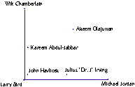

How This Technology Works:
CViz begins by segmenting the given database, using a highly efficient "clustering" algorithm to group records according to similarity. Each group of records is associated with a sort of virtual record that exemplifies that group. This virtual exemplar is known as a "centroid." Next, we need to "project" these high dimensional records onto a 2-dimensional plane for viewing. But this task is complicated by the fact that each record (a.k.a. "data point," "feature vector", "data row") has many fields (a.k.a. "attributes," "features," "columns"). A typical competing method for viewing such data chooses two fields from among the many that are available, and then plots the records using one field for the vertical axis and the other chosen field for the horizontal axis. This "view" is also called a "projection," because the data is projected onto a plane defined by the 2 chosen fields. But choosing which 2 such fields are the best to use is difficult, because there are a large number of choices! Choosing the best view is tedious at best, and impossible at worst.
CViz instead chooses 3 of the centroids, using one as a sort of "pseudo-origin," and the other two defining the viewing axes. It turns out that this projection has nice mathematical properties. Transitioning from one projection plane (corresponding to using a particular set of 3 centroids) to another is done in a smooth and visually appealing way known as "touring." It also turns out that there are many fewer such projections to choose from, so browsing the available "views" is simplified dramatically! And data is now more easily understood, in terms of its relations to its own natural groupings rather than in terms of low level features.
For example, if you had to group the best NBA basketball players throughout history, the old way would be to group them according to their similarity in terms of low level attributes (such as scoring percentage, playoff win percentage, rebound average, scoring average, assists, years played, height, weight, position played, etc. etc.), and then use those low level attributes to visualize the groupings. And hold on - you'll have to choose two of these attributes for the X and Y axes (e.g., X=scoring percentage and Y=rebound average), or (say) come up with some informative composition that can incorporate more than 2 attributes such as X=(scoring average + rebound average) and Y=playoff win percentage.
But CViz could instead choose an exemplar for each group (e.g., Michael Jordan, Wilt Chamberlain, Larry Bird), and then you could describe each other player - or group of players - according to how they compare to these examplars. For instance, Kareem is one of the best centers ever, more similar to Wilt Chamberlain than Michael Jordan, whereas Dr. J was a flashy high scoring offensive player much like Jordan. On the other hand, the tall yet agile center Akeem Olajuwan (sp?) has attributes making him similar to the best center of all-time (Wilt Chamberlain) and the best forward of all time (Michael Jordan). This is much more intuitive - and informative - than the alternative of reducing each player or group of player to arbitrary pair of stats! And, if you prefer, you could select a different set of 3 exemplars against which to perform your own pet comparison (say instead, compare everyone against the three centers Wilt, Akeem, and Kareem).

Figure: Basketball Exemplars